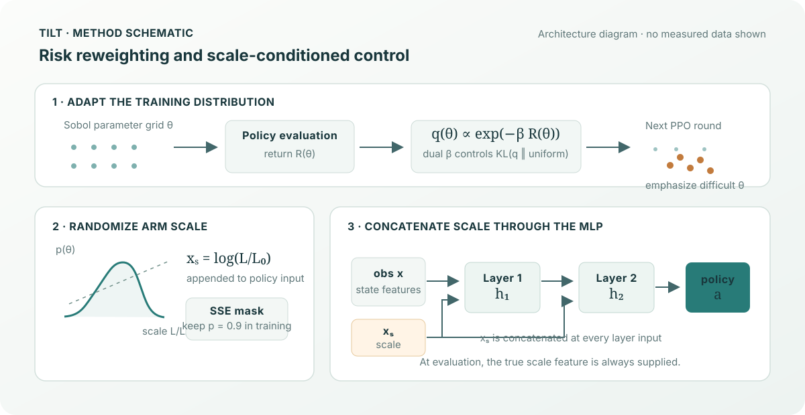

Risk-weighted sampling
Returns on a fixed Sobol parameter grid set weights for sampling the next training round.
TILT combines iterative risk-aware domain randomization with scale-conditioned PPO for a simulated quadrotor hover task in Genesis.

Training loop, policy architecture, and evaluation
Returns on a fixed Sobol parameter grid set weights for sampling the next training round.
The tilt strength responds to target KL divergence; an ESS guard limits weight concentration.
The log arm-scale feature is concatenated to the input of each hidden policy layer.
During training, scale is retained per sample with probability SCALE_KEEP_P.
The scale feature is supplied to the policy during evaluation. Risk reweighting uses q(θ) ∝ exp(−βR(θ)); the environment models arm scale together with mass, inertia, center-of-mass shifts, thrust coefficient, and turbulence.
Defaults exposed by main_tilt.py and documented in the README:
SCALE_KEEP_P defaults to 0.9For dependencies, exact commands, output paths, and resume behavior, see the full README.